À propos des villes
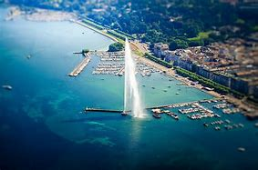
Genève
Genève, au bord du lac Léman, est une ville au rôle international important. Elle abrite l’ONU, la Croix-Rouge et le CERN, célèbre laboratoire de physique des particules. Son Jet d’eau, ses musées et ses parcs en font un lieu dynamique et agréable.
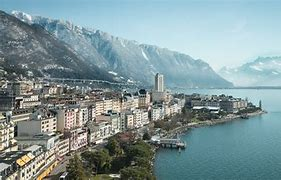
Montreux
Montreux, sur les rives du lac Léman, est célèbre pour son festival de jazz annuel, attirant des artistes du monde entier. Avec sa promenade fleurie, son climat doux et le château de Chillon, c’est une ville idéale pour la détente et la culture.
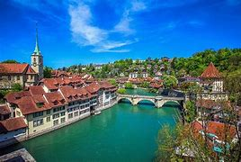
Berne
Berne, capitale suisse, est connue pour le Palais fédéral, siège du gouvernement. Son centre médiéval classé à l’UNESCO, sa tour de l’horloge et ses rives de l’Aar offrent un mélange parfait entre histoire, culture et qualité de vie.
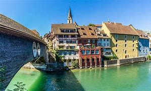
Baden
Baden est réputée pour ses bains thermaux et ses centres de bien-être. Avec ses sources chaudes naturelles, son centre historique et sa scène culturelle animée, cette ville offre détente et découvertes dans un cadre charmant.
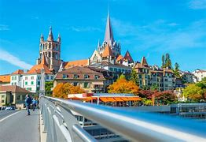
Lausanne
Lausanne, sur le lac Léman, est la capitale olympique et abrite le CIO. Entre sa cathédrale gothique, ses musées et ses quartiers animés, elle allie histoire, culture et dynamisme.
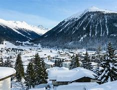
Davos
Davos, située dans les Alpes suisses, est célèbre pour son Forum économique mondial annuel, qui attire des leaders mondiaux. En plus de son rôle politique, la ville est une station de ski populaire et un centre de bien-être, offrant des panoramas spectaculaires et des activités de plein air toute l’année.
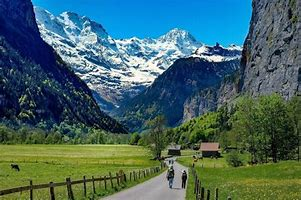
Interlaken
Interlaken, située entre les lacs de Thoune et de Brienz, est célèbre pour ses paysages alpins à couper le souffle. Cette station de montagne est un paradis pour les amateurs d’aventure, offrant des activités comme le parapente, la randonnée et le ski. Interlaken est également un point de départ idéal pour explorer la région de la Jungfrau.
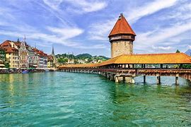
Lucerne
Lucerne, située au bord du lac des Quatre-Cantons, est une ville pittoresque entourée de montagnes. Elle est célèbre pour son pont en bois, le Kapellbrücke, et son vieux centre-ville bien préservé. Lucerne est également un centre culturel avec de nombreux musées et festivals, tout en étant un point de départ pour explorer les Alpes suisses.
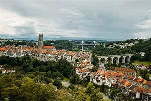
Fribourg
Fribourg, située entre la Suisse romande et la Suisse alémanique, est une ville au charme médiéval. Avec ses ruelles étroites et ses bâtiments anciens, elle conserve une belle architecture historique. Fribourg est aussi connue pour son université et sa scène culturelle dynamique, ainsi que pour sa cuisine, notamment le fromage.
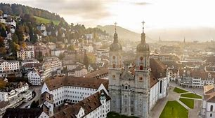
Saint-Gall
Saint-Gall, située dans l’est de la Suisse, est célèbre pour son abbaye, classée au patrimoine mondial de l'UNESCO. La ville allie histoire et modernité, avec une vieille ville pittoresque et des musées intéressants. Saint-Gall est également un centre de textile, avec une longue tradition dans ce domaine.
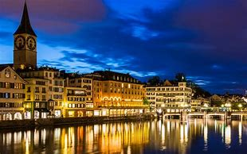
Zurich
Zurich, la plus grande ville de Suisse, est un centre financier et culturel majeur. Elle est connue pour son lac magnifique, ses rues commerçantes animées et son vieux quartier bien préservé. Zurich offre une scène artistique dynamique, avec de nombreux musées, galeries et festivals, tout en étant un point de départ pour explorer les Alpes suisses.
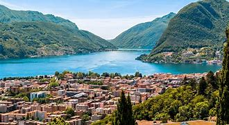
Lugano
Lugano, située dans le canton du Tessin, est une ville suisse influencée par la culture italienne. Elle est célèbre pour son lac pittoresque, ses montagnes environnantes et son climat méditerranéen. Lugano offre également une vie culturelle riche avec ses festivals, musées et boutiques de luxe, tout en étant un centre économique important du sud de la Suisse.
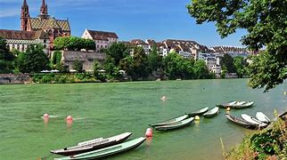
Bâle
Bâle, située au bord du Rhin, est une ville suisse connue pour son riche patrimoine culturel et son rôle en tant que centre médical et pharmaceutique. Elle est célèbre pour ses musées, notamment le Kunstmuseum et la Fondation Beyeler, ainsi que pour son carnaval, l'un des plus grands d'Europe. Bâle allie histoire, art et innovation dans un cadre dynamique.